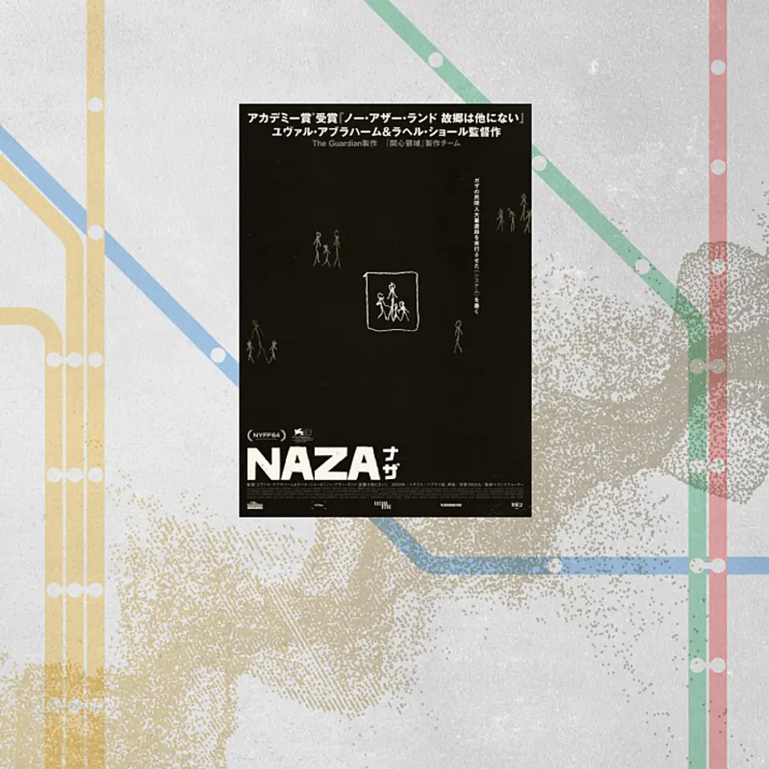
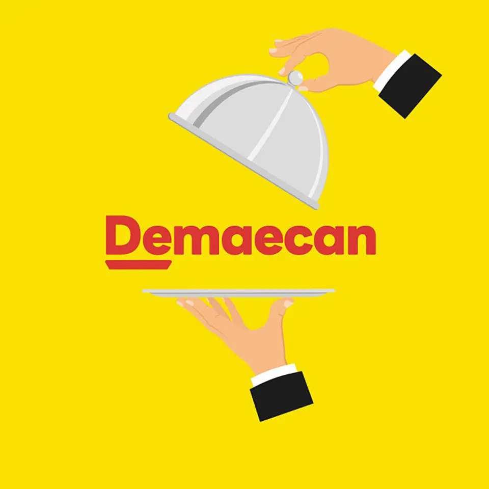
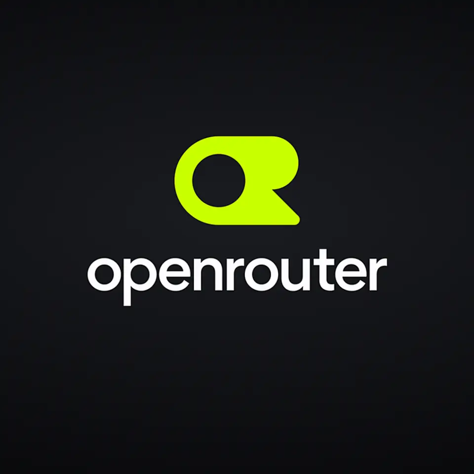

01【大論争】AIを戦場で使った、イスラエル兵たちの告白
発行日時：2026年10月16日 05:30 JST

あなたに関係ありそうな理由
AIを業務へ入れる際、性能や効率だけでなく、人がどこで判断し、誰が止めるかを先に決める重要性を考える材料になるためです。
概要
記事は、ガザ地区でのAI利用を扱うドキュメンタリー映画『NAZA』を起点に、軍事で自動化が拡大した時に何が起こるかを追う。英ガーディアンが制作を担い、二人のイスラエル人監督が3年かけて取材した作品で、匿名の情報将校や兵士24人が、大規模監視と標的選定にAIをどう使ったかを証言する。記事が伝える中心は、AIが人を完全に置き換えたという話ではなく、機械が候補を大量に出し、人間の承認が形式化すると、攻撃の規模と速度が変わり得るという問題だ。
映画内では、通信データなどから標的の行動を追う仕組みや、自宅への帰宅を検知して攻撃につなげるとされる運用が語られる。監督は、AIの最大の問題は精度だけでなく、何万人規模を短時間で扱えることだと指摘する。記事は、民間人の巻き添え被害を示す略語「NAZA」や、匿名証言に基づくため外部から検証しにくい点も説明する。感情的な結論に急がず、何が証言で、どこに検証上の限界があるかを区別している。
イスラエル国防軍は、映画の内容に対して、民間人被害の最小化を義務付けていること、AIが独立して標的を決めていないこと、匿名証言では検証できないことなどを反論として示した。制作側は、100人以上への取材や機密文書、攻撃記録との照合を行ったと説明する。この記事は、片方の主張だけで事実を確定せず、証言、映画制作側の根拠、IDFの公式反論を並べ、AI利用をめぐる説明責任の難しさを読者へ渡している。
表示コメントでは、AIがKPI達成を支えるほど、人命や被害を数字として扱う危険が強まるという指摘が出た。一方で、軍事以外の業務でも、入力、推薦、最終承認の境目が曖昧なら、担当者が結果を追認するだけになりやすい。自動化を採用する時は、どの判断を人が再確認するか、異議を出せる記録は残るか、停止できる権限を誰が持つかを設計に入れたい。対象の抽出、優先順位づけ、承認のどこを機械に任せるかを分けて記録しなければ、問題が起きた後に責任の所在をたどれない。大量処理が可能になるほど、個々の推薦を誰がどの時間で吟味したかは、結果だけから見えにくくなる。今後は、映画の主張とIDFの反論が、公開資料や第三者の検証でどこまで確かめられるかを見たい。
仕事や会話で使える一言
「自動化の効果だけでなく、異議を出して止める人と記録を最初から置きたいですね。」
NewsPicks原文を読む
02【直撃】隈研吾×金剛組。｢60億円の京町家｣は本当に売れるのか
発行日時：2026年10月16日 05:30 JST
あなたに関係ありそうな理由
古い建物の改修を、工事費だけでなく運用収益、文化的価値、契約上のリスクまで含めて読む視点になるためです。
概要
記事は、京都・上七軒にある築200年超の町家「旧長谷川邸」を、世界の富裕層向けの高級邸宅へ再生する計画を追う。デザイン監修は隈研吾氏、施工は堂宮大工の金剛組、茶室、庭、彫刻の担い手も参加する。マンションデベロッパーのフィードが主導し、完成は2028年予定、延べ床約284平方メートル、2ベッドルームの物件を60億円で販売する構想だ。歴史ある町家を残すことと、収益物件として世界市場に売ることを一つの事業に重ねている。
改修は保存だけを目的にしない。隈氏は庭や縁側の魅力を現代的に見せ、室内は作り込みすぎない方針を示す。金剛組にとっては、柱を増やして耐震性を上げる改修が多いなか、柱を抜いて間取りを変え、梁に代わる補強を検討する初めての挑戦だという。木造を傷んだ部分から継ぐ考え方は、スクラップ&ビルドだけでは回らない時代の建物の扱い方として記事に置かれている。設計上の魅力と、構造・工期・費用の不確実さは別々に管理する必要がある。
価格は工事費を積み上げたものではなく、1泊200万〜250万円で貸し出す場合の稼働率と利回りから逆算したと、事業者は説明する。掲載後半年でホテル事業者や海外の富裕層から問い合わせがある一方、まだ成約には至っていない。アルマーニ／カーザとの連携を含む「ブランデッド・レジデンス」の潮流へ、日本の歴史や職人技を掛け合わせる狙いもある。文化の継承を商売として続けられる形にする試みだが、売れ行きと運用実績がその価値を確かめることになる。
表示コメントでは、60億円の根拠と改修工事の原価を混同しないこと、解体後の傷みや追加補強を誰が負担するかを契約で決めるべきだという論点が出た。高価格帯の案件でなくても、築古物件の改修では、完成後の収入予測と現場で判明する工事内容がずれる。建物の希少性だけでなく、販売前の保有コスト、許認可、運営を担う主体まで採算表に入れなければ、華やかな価格だけでは事業の実態が見えない。まずは、改修案件で構造調査をどこまで見積前に終えるか、追加工事や工期延長をどう精算するかを確認したい。今後は、販売だけでなく実際の宿泊運営と、文化を守る費用をどう回収できるかを追いたい。
仕事や会話で使える一言
「改修の出口価格と、解体後に増える工事費は、同じ表で先に見ておきたいですね。」
NewsPicks原文を読む
03【意外】エヌビディア、AIインフラ構築の鍵を握るのは「娘婿」
発行日時：2026年10月16日 05:30 JST
あなたに関係ありそうな理由
AIの競争力がモデルや半導体だけでなく、資金調達、電力、顧客の採算までを動かす事業設計に広がっているためです。
概要
記事は、エヌビディアがAIインフラを広げるために、GPUの販売だけではない役割を強めている構図を描く。焦点となるのは、ジェンスン・フアンCEOの娘婿で、35歳のニコ・カプレズ氏だ。報道によれば、同氏は2年半前に入社し、約2年で副社長となり、新興クラウド事業者への支援や、AIインフラの資金づくりを担う。家族関係が話題の入口だが、記事の本題は、半導体会社が顧客の資金と設備の制約まで扱うようになっている点にある。
エヌビディアが支援する「ネオクラウド」は、グーグルやアマゾンのような大手に比べ、資金力や信用格付けで劣る新興のクラウド事業者を指す。同社は、こうした事業者が低金利で融資を受けられるよう信用保証を提供し、コアウィーブや豪ファーマス向けの案件を進めてきたという。8月にはブラックストーンなど資産運用会社6社と組み、クラウド事業者への融資に5000億ドル、約80兆円の第三者資本を充てる構想も発表した。顧客がGPUを買う前に必要な資金をどう用意するかが、供給拡大の条件になっている。
記事は、AIデータセンターで不足しやすい電力や土地の確保にも触れる。エヌビディアは8月、データセンター向けに電力・土地を確保する米国の事業者2社へ少額出資した。大手クラウド各社が自社チップを開発する中で、同社にとってネオクラウドを育てる意味は大きい。GPUの性能競争だけを見ていると、信用保証、資産運用会社、電力事業者までを束ねる動きが見えにくい。AIインフラは、機器の販売と金融、建設、エネルギーが結び付いた長期事業になりつつある。
後半では、日本に多い婿養子による継承にも目を向ける。記事が紹介する研究では、上場企業の分析で、婿・養子が継いだ企業は創業者に次いでROAが高かったとされる。ただし、個人の出自から後継者の適性を決める記事ではない。表示コメントでは、ネオクラウド支援はGPU需要を維持する策であり、需要鈍化時の利益率低下や金融リスクも見るべきだとの指摘が出た。保証と出資が増えるほど、売上だけでなく、資金の戻り方と設備の稼働がどこまで連動しているかを外から見極めにくくなる。今後は、保証付き融資の回収、データセンターの電力確保、顧客の利用継続がそろうかを確認したい。
仕事や会話で使える一言
「AIの競争はチップの性能だけでなく、顧客が設備に投資できる資金まで含めた競争ですね。」
NewsPicks原文を読む
04【出前館】赤字8年、ついに「黒字化」が見えてきた
発行日時：2026年10月16日 05:30 JST

あなたに関係ありそうな理由
利用者を増やす価格施策と、1件ごとの採算、手元資金を同時に見る事業運営の具体例になるためです。
概要
記事は、出前館が8期連続の最終赤字から、2027年8月期の第1四半期に営業黒字を見込むまでの過程を、決算数値で追う。2026年8月期の売上高は391億円、営業損益は83億円の赤字、最終損益は82億円の赤字、GMVは1596億円だった。GMVは利用者が同社を通じて支払った総額、売上高は加盟店手数料や配達料など同社の取り分で、両者を混同しないことが出発点になる。通期ではGMVが前年より約5％減り、ピークだった2022年8月期の2201億円から縮小している。
一方、四半期の動きは変わり始めた。第3、第4四半期のGMVは前年同期比103％、下期の売上高は112％となり、月次営業損失は3月の12.1億円、4月の14.0億円から、8月は6.5億円、9月の暫定値では8500万円まで縮んだ。限界利益率も3月の1％から9月には25％へ改善したという。会社は、注文増を高い品質で届けるために一時的に費用がかかったと説明し、今後は固定費を抑えつつ二桁成長と黒字を両立させる方針を示す。
売上回復の中心は、店頭と同じ価格で注文できる「お店価格で出前館」だ。地方5都市、250店舗から始め、2026年3月に全国展開、8月には約2万5000店舗まで広がった。6〜8月期は注文数が前年同期比8％増、売上高は13％増となった反面、本格展開した第3四半期の営業赤字は32億円に膨らんだ。価格を下げれば利用者を増やせても、利益が残るとは限らない。施策の導入期と回収期を分けて見る必要がある。
競争環境も厳しい。国内の主要事業者は3社へ収束したが、ロケットナウは送料無料を武器に広げ、Uber Eatsも全国展開する。出前館の現金及び現金同等物は196億円で、2022年8月期末の533億円から減少し、営業キャッシュフローは89億円の流出だった。表示コメントでは、四半期黒字と持続的なキャッシュ創出は別の問題だと指摘された。割引や配送体制の費用を含めても、リピート注文が増えれば一件当たりの固定費をどこまで薄められるかが持続性を左右する。次の決算では、黒字になったかだけでなく、注文頻度、配送効率、資金の減り方、LINEヤフーとの連携が採算を支えるかを見たい。
仕事や会話で使える一言
「利用を増やす価格施策は、導入期の赤字と回収期の採算を分けて追いたいですね。」
NewsPicks原文を読む
05AIを切り替えるだけの会社が、1兆円企業になったワケ
発行日時：2026年10月16日 05:30 JST

あなたに関係ありそうな理由
複数のAIを使うほど、モデル選びを個人任せにせず、料金、品質、障害時の切替を業務設計にする必要があるためです。
概要
記事は、複数の生成AIモデルを一つの窓口で使い分ける仲介サービス、OpenRouterの成長を追う。AIでは入力と出力の文字列の断片であるトークンが課金単位になるが、同じ作業でもモデルごとに価格が大きく異なる。記事は、中国のディープシークの人気モデルが、アンソロピックの最先端モデルの約40分の1の単価だと紹介する。利用企業にとっては、処理量が事前に読み切れず、強いモデルを常に使えば費用が膨らむという問題がある。ここに、モデルを切り替える市場の余地が生まれた。
OpenRouterは2023年、OpenSea共同創業者のアレックス・アタラ氏らが立ち上げた。利用者は、あるモデルが止まった時に別のモデルへ切り替えたり、より安価なモデルが出れば乗り換えたりできる。同社は経由した利用に少額の手数料を取る。記事によれば、8月には決済大手ストライプが75億ドル、約1兆2000億円超での買収に合意したと報じられた。単一モデルの性能競争ではなく、選ぶ手間と価格の不確実さを引き受ける仕組みが価値になっている。
競合は同社だけではない。アマゾンのBedrockやグーグルのVertex AIも複数モデルを提供するが、クラウド大手は自社モデルを開発したりAI研究所へ出資したりしており、中立性を懸念する利用者もいるという。OpenRouterは、開発者が多くのモデルを試し、実務に合うものを比較する場として支持を集めた。記事は、顧客が実際に支払う金額が、ベンチマークだけでは分からない実用性の評価にもなり得ると見る。
アタラ氏は、業務を裁量の高さで三段階に分け、低・中程度なら安価なモデルを使い、ゼロからコードを書くような高い作業だけに最先端モデルを温存する考えを示す。表示コメントでは、コスト削減だけでなく、応答時間、精度、障害時の冗長性、ベンダーロックイン回避にもつながるという意見があった。一方、同じ仕事を細かく分けすぎると出力の一貫性が崩れる懸念もある。同じ案件でモデルを切り替えるなら、前段の出力を次へ渡す形式や、担当者が見直す地点もあらかじめそろえる必要がある。導入時は、タスクの分類、品質の確認者、切替基準、利用量の記録を一緒に決め、単価だけで選ばない運用にしたい。
仕事や会話で使える一言
「AIを使い分けるなら、単価だけでなく品質・停止時の切替・利用量を同じ管理表で見たいですね。」
NewsPicks原文を読む